| акселерометры | - обзор предлагаемых устройств |
| прецизионный акселерометр |
-
измерение малых ускорений,
-
широкий динамический диапазон
|
| акселерометр Bluetooth | ВИДЕО Акселерометр Bluetooth -график в реальном времени |
| акселерометр USB | ВИДЕО 1 Измерения
акселерометром
USB с памятью =================== ВИДЕО 2 Синхронная запись ДВУМЯ акселерометрами USB |
| акселерометр RS-485 | ВИДЕО Измерения акселерометром RS-485: |
| акселерометры с аналоговыми выходами | |
| Ударные испытания транспорта | ВИДЕО Испытания ж/д цистерны на удар |
| Ударные испытания оборудования | ВИДЕО Испытания велосипедных шлемов на удар |
| Программное обеспечение |
| Параметры акселерометров |
| Применение акселерометров |
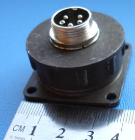
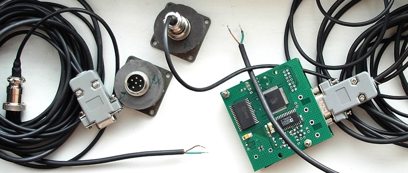
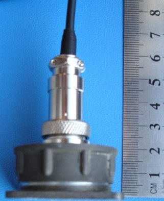
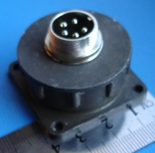
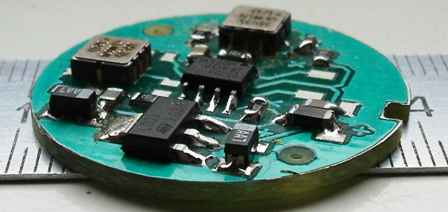
Если датчик должен иметь минимальные габариты и вес,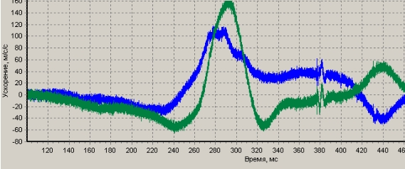
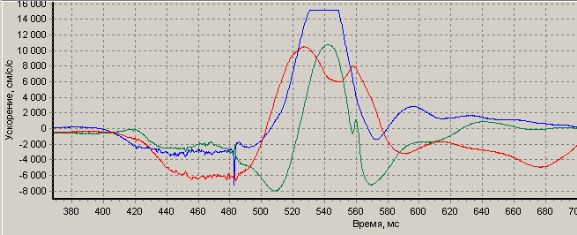
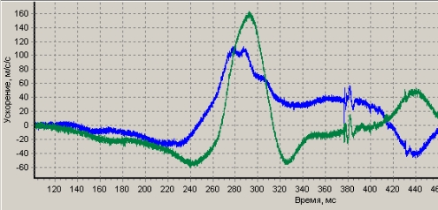
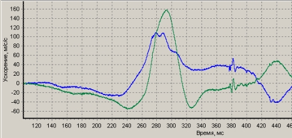
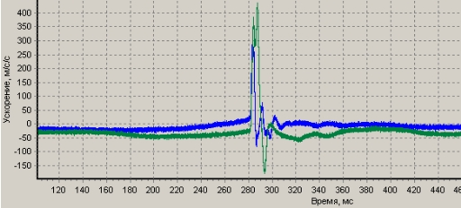
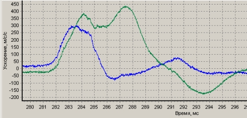
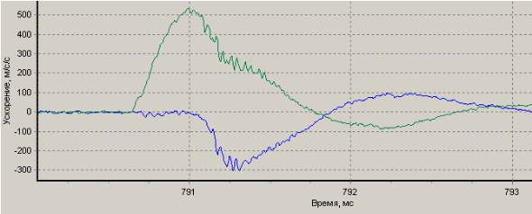
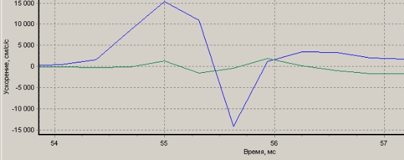
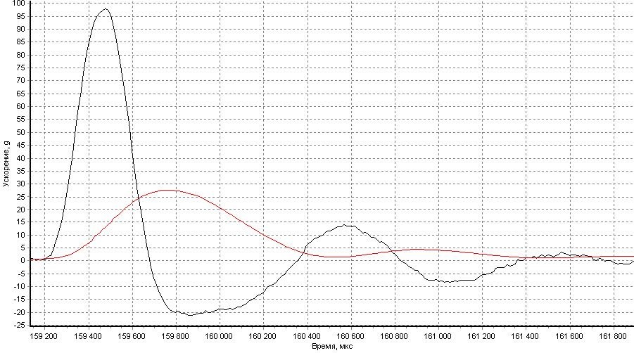
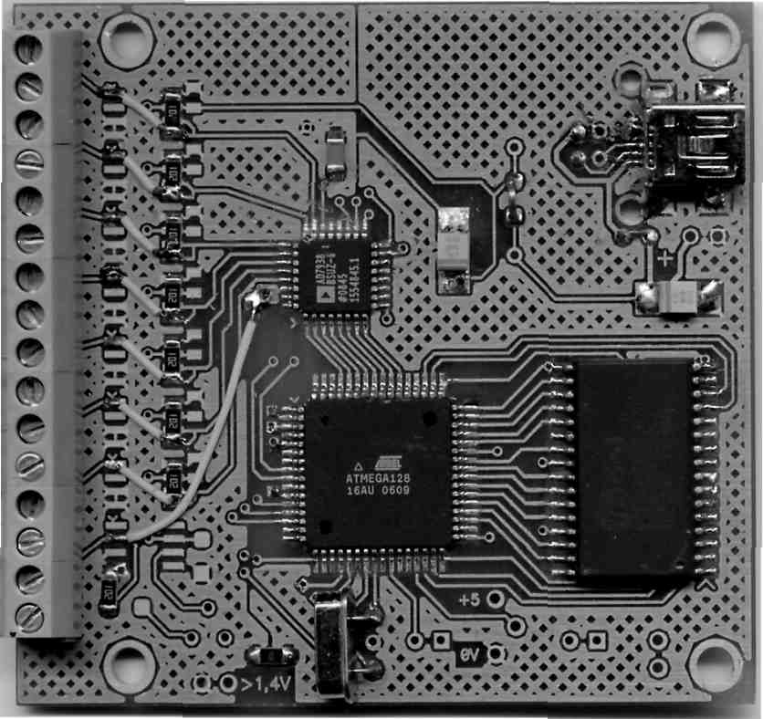
Вид платы АЦП - за основу взят Контроллер для 8-ми термопар , вместо микросхем усилителей сигналов термопар установлены перемычки.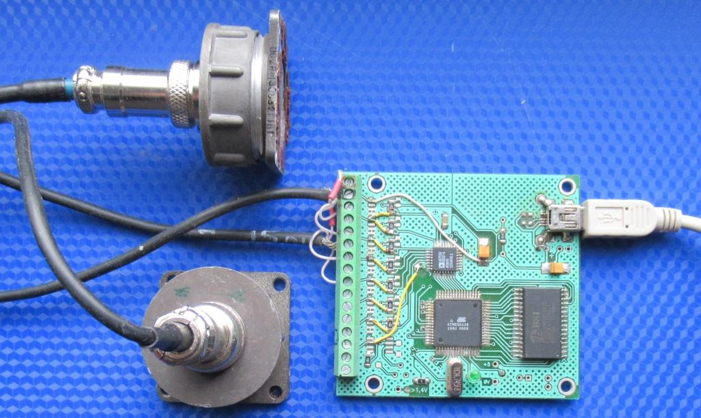
На фото к плате подключены два 2-осевых акселерометра (в каждом по два MEMS-акселерометра ADXL001-70g). Акселерометры питаются через плату от USB.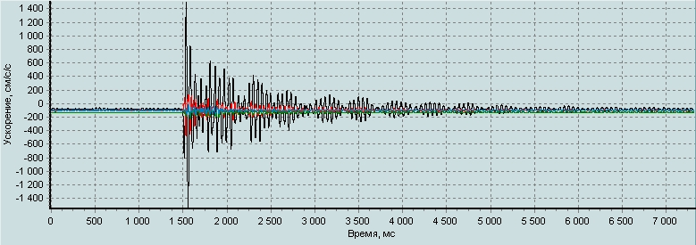
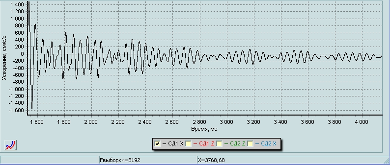
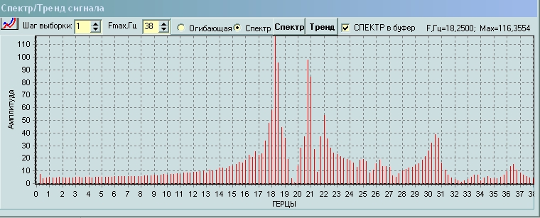
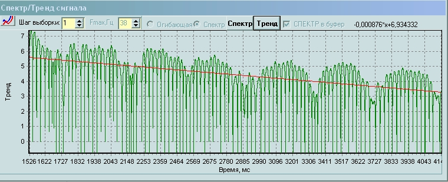